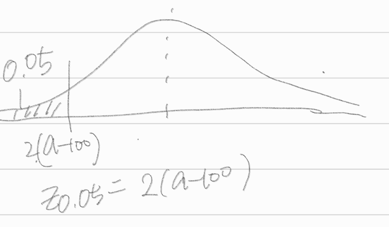

9장 최강력 검정법
1.
확률밀도함수가 \(f(x;\theta) = \frac{1}{\theta}(0\le x \le \theta)\)인 분포로부터 하나의 관찰값 \(X\)를 얻었다고 하자.
이때 가설 \(H_0 : \theta = 1\) vs \(H_1 : \theta=2\)에 대한 기각영역을 \(C = \{ x: x>0.7\}\)로 했을때, 제 1종오류를 범할 확률 \(\alpha\)와 제 2종오류를 범할 확률 \(\beta\)를 계산하라.
answer
\(\alpha = P(\text{Reject } H_0 | H_0 \text{ True})\)
\(\alpha = P(x>0.7 | \theta = 1)\)
\(= \int^1_{0.7} 1 dx = [ x ]^1_{0.7} = 1-0.7 = 0.3\)
\(\beta = P(\text{type 2 Error}) = P(\text{Not Reject } H_0 | H_0 \text{ False})\)
\(P(x<0.7 | \theta = 2)\)
\(= \int^{0.7}_0 \frac{1}{2} dx = [\frac{1}{2} x]^{0.7}_0 = \frac{0.7}{2} - \frac{0}{2} = \frac{0.7}{2} = 0.35\)
2.
\(X_1, X_2,\dots, X_{16}\)이 \(N(\mu,4)\)로부터 구한 랜덤표본이라 하자.
이제 표본평균 \(\bar{X}_{16}\)에 근거하여 모평균 \(\mu\)에 대한 가설 \(H_0 : \mu = 100\)을 유의수준 \(\alpha = 0.05\)에서 검정하고자 한다.
(1)
기각영역의 형태가 \(C = \{(X_1,X_2,\dots,X_{16}) | \bar{X}_{16} < a\}\)로 주어질때 상수 \(a\)의 값을 구하라.
answer
\(X_1, \dots, X_{16} \sim N(\mu,4)\)
\(\bar{X}_{16} \sim N(\mu,(\frac{1}{2})^2)\)
\(\alpha = P(\text{Reject } H_0 | H_0 True)\)
\(0.05 = P(\bar{X}_{16}<a | \mu = 100)\)
\(0.05 = P(\frac{\bar{X}_{16} - 100}{1/2} < \frac{a-100}{1/2} | \mu = 100)\)
\(0.05 = P(Z < 2(a-100))\)

\(a = \frac{Z_{0.05}}{2} + 100\)
\(= \frac{-1.645}{2} + 100 = -0.8225 + 100 = 99.1775\)
(2)
대립가설이 \(H_1: \mu = 103\)인 경우 (1)에서 구한 기각영역에 대하여 제 2종오류를 범할 확률을 구하라.
answer
\(\beta = P(\text{Type 2 error}) = P(\text{Not Reject }H_0 | H_0 \text{False})\)
\(= P(\bar{X}_{16} > a | \mu = 103)\)
\(= P(\frac{\bar{X}_{16} - 103} {1/2} > \frac{1-103}{1/2} | \mu = 103)\)
\(= P(Z > -7.645) = 1- \phi (-7.645)\)
(3)
대립가설이 \(H_1 : \mu = 97(\)일 경우 (1)에서 구한 기각 영역에 대하여 제 2종 오류를 범할 확률을 구하라.
answer
\(\beta = P(\text{Type 2 error}) = P(\text{Not Reject }H_0 | H_0 \text{False})\)
\(= P(\bar{X}_{16} > a | \mu = 97)\)
\(= P(\frac{\bar{X}_{16} - 97} {1/2} > \frac{1-97}{1/2} | \mu = 97)\)
\(= P(Z > 4.355) = 1- \phi (4.355)\)
4.
성공 확률이 \(p\)인 베르누이 시행에 대한 가설 \(H_0 : p=\frac{1}{2}\) vs \(H_1 : p = \frac{3}{4}\)을 고려하자.
2회의 독립시행의 결과가 모두 ’성공’일 경우에만 \(H_0\)을 기각하지 않는 검정의 유의수준 \(\alpha\)와 검정력 \(1-\beta\)를 구하라.
answer
\(f(c) = p^x (1-p)^{1-x}\)
\(f(x_1) = p\), \(f(x_2) = p\) \(\to \text{Not Rject }H_0\)
\(\alpha = P(\text{Reject } H_0 | H_0 \text{True})\)
\(\alpha = P((1-p)^2 | p=\frac{1}{2}) = \frac{1}{4}\)
\(\beta = P(\text{not Rejext } H_0 | H_0 \text{ False})\)
\(= P(p^2 | p=\frac{3}{4}) = \frac{9}{16}\)
\(1-\beta = \frac{7}{16}\)
6.
\(X_1\)과 \(X-2\)가 확률밀도함수 \(f(x;\theta) = (\frac{1}{\theta})exp(-\frac{x}{\theta}), x>0\)으로부터 구한 랜덤표본이라고 한다.
이제 가섷 \(H_0 : \theta=2\) vs \(H_1: \theta=1\)을 고려할떄, \(H_0\)에 대한 기각영역을 \(\frac{f(x_1:2)f(x_2:2)}{f(x_1:1)f(x_2:1)}<\frac{1}{2}\)을 만족하는 표본값으로 택하였다. 이와 같은 검정법에 대한 유의수준과 \(H_0\)이 참이 아닐 떄의 검정력을 구하라.
answer
\(\alpha = P(\text{Reject }H_0 | H_0 \text{ True})\)
\(= P(\frac{f(x_1:2)f(x_2:2)}{f(x_1:1)f(x_2:1)}<\frac{1}{2}|\theta = 2)\)
\(= P(exp(\frac{x_1}{2} + \frac{x_2}{2}) < 2| \theta = 2)\)
\(= \int^2_0 exp(\frac{1}{2}exp(x_1 + x_2) dx\)
\(= 2exp(\frac{1}{2}[exp(x_2 + x_2)]^2_0 = 2exp(\frac{1}{2}) (exp(4)-1) = 2(exp(\frac{9}{2}) - exp(\frac{1}{2}))\)
\(\beta = P(\text{Not Reject} H_0 | H_0 \text{False})\)
\(= P(\frac{f(x_1"2)f(x_2:2)}{f(x_1:1)f(x_2:1)}) > \frac{1}{2} | \theta = 1)\)
\(= P(exp(\frac{x_1}{2} + \frac{x_2}{2}) > 2 | \theta = 1)\)
\(= 1-\int^{\infty}_2 exp(\frac{1}{2}[2exp(x_1 + x_2 ) dx\)
\(= 1-exp(\frac{1}{2}[2exp(x_1 + x_2)]^\infty_2\)
\(= 1 + 2exp(\frac{1}{2}exp(4) = 1+2exp(\frac{9}{2})\)